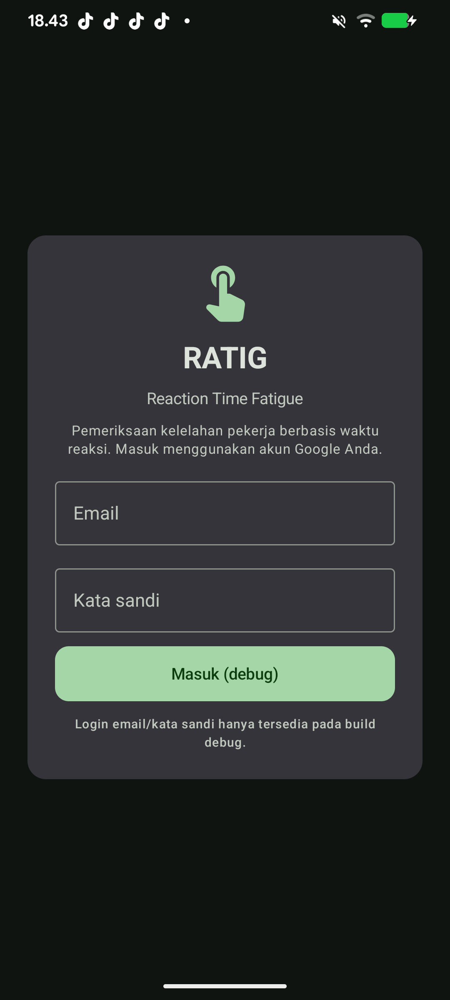

Pemeriksaan Kelelahan Pekerja Berbasis Waktu Reaksi
Buku kerja untuk petugas pemeriksa, administrator, dan pengelola sistem
Versi 1.0 · Android · 2026
Program Studi Informatika · Universitas Siliwangi
Alat bantu keputusan, bukan diagnosis medis. Keputusan akhir tetap mengikuti SOP perusahaan dan penilaian pemeriksa yang berwenang.
Buku ini adalah panduan kerja, bukan manual teknis pengembangan. Isinya disusun mengikuti urutan pekerjaan nyata:
Setiap bab dapat dibaca berdiri sendiri. Untuk referensi teknis,
lihat docs/architecture.md; untuk naskah lengkap, lihat
docs/manual/RATIG-Manual.pdf.
| Peran | Bab yang wajib dibaca |
|---|---|
| Petugas pemeriksa | 2, 4, 5, 6, 7, 13 |
| Admin | 2, 4, 8, 9, 10, 13 |
| Super Admin | 2, 9, 10, 11, 13 |
| Pengguna/pekerja | 2, 3, 7, 10, 13 |
| Pengembang/pengelola teknis | seluruh buku + docs/deployment.md |
Lakukan pemeriksaan singkat sebelum pekerja pertama datang.
| Peran | Tanggung jawab utama | Batas |
|---|---|---|
| Super Admin | konfigurasi protokol, aturan, data master, akun admin, audit | tidak menggantikan keputusan medis |
| Admin | pekerja, pengguna biasa, jadwal, laporan, pemantauan | tidak mengubah konfigurasi atau mengangkat admin |
| Pengguna | menjalankan tes dan melihat riwayat sendiri | tidak melihat data pekerja lain |
“Satu orang, satu akun.” Jangan memakai akun petugas untuk pekerja, atau sebaliknya. RLS di server membatasi data berdasarkan akun dan peran.
Pengaturan dapat diubah dari Profil → Pengaturan Tampilan.
Email adalah ID login. Tidak perlu mailbox aktif. Untuk organisasi
tanpa hosting email, gunakan ID internal seperti
nama@ratig.local.

Gambar 1. Login email/kata sandi.
Akun dapat berstatus Menunggu. Hubungi Admin. Jangan membuat akun sendiri; tidak ada pendaftaran mandiri.
Pilih pekerja → pilih tes → baca instruksi → tes
→ tinjau hasil → finalisasi → sinkronkan
Gambar 2. Daftar pekerja dan filter.
Jika sesi terputus, gunakan alur pemulihan yang tersedia. Jangan memaksa keluar saat proses finalisasi berjalan.
| Mode | Cocok untuk | Hasil |
|---|---|---|
| Klasik (RGB) | pemeriksaan standar | klasifikasi kelelahan |
| Warna Acak | variasi stimulus | metrik pengamatan |
| Tombol Acak | koordinasi mata–tangan | akurasi/kelalaian |
| Fokus (Go/No-Go) | kontrol impuls | akurasi/kelalaian |
Hanya mode Klasik yang dipakai untuk klasifikasi. Mode lain tidak digabung menjadi satu skor.
Protokol menentukan jumlah percobaan, delay stimulus, timeout respons, dan konfigurasi tambahan. Super Admin dapat mengubah protokol dari menu Protokol Uji.
Perubahan pada protokol aktif disimpan pada versi yang sama. Layar edit menampilkan peringatan. Catat alasan perubahan pada audit/tindak lanjut.

Gambar 3. Daftar protokol.
| Istilah | Arti |
|---|---|
| Mean | rata-rata waktu reaksi |
| Median | nilai tengah |
| Std. Deviasi | sebaran respons |
| Percobaan valid | trial yang dihitung |
| Respons lambat | respons melewati ambang |
| Kategori | Normal / Ringan / Sedang / Berat |
Bila aturan belum divalidasi, hasil menampilkan “Perlu validasi”. Bila data valid tidak cukup, menampilkan “Data tidak cukup”. Jangan menafsirkan keduanya sebagai “Normal”.

Gambar 4. Detail hasil dan trial.
Menu Riwayat menampilkan sesi berdasarkan periode, shift, status, kategori, dan nama pekerja.
Untuk peran Pengguna, riwayat hanya berisi sesi sendiri. Filter departemen diganti informasi Departemen Anda.
Berisi identitas pekerja, pemeriksa, shift, protokol, waktu, metrik, rincian trial, dan tindak lanjut.
Tindak lanjut adalah catatan operasional, bukan diagnosis.
Buka Profil → Pengguna → (+).
| Kolom | Keterangan |
|---|---|
| Nama lengkap | wajib |
| ID Login | email atau nama@ratig.local |
| Peran | Admin hanya boleh membuat Pengguna |
| Status | aktif atau menunggu |
| Kata sandi sementara | min. 8 karakter; wajib |
Tidak ada email undangan. Berikan ID dan sandi langsung kepada pengguna.
Gunakan menu pengguna → nonaktifkan. Riwayat pekerja tidak dihapus. Akun yang nonaktif tidak bisa masuk.
Menampilkan pekerja aktif, total pengguna, sesi hari ini/total, sesi belum selesai, tindak lanjut terbuka, akun menunggu, klasifikasi hasil, sebaran departemen/shift, dan tren.

Gambar 5. Grafik dasbor.
Jika grafik kosong: belum ada sesi final, atau pekerja belum memiliki departemen. Itu bukan kegagalan aplikasi.
Buat/ubah protokol, aktifkan draf, atau tarik protokol aktif. Menu Ubah tersedia untuk semua status.
Atur ambang dan label kategori. Validasi aturan sebelum dipakai untuk keputusan. Aturan yang belum valid akan menampilkan “Perlu validasi”.
Kelola departemen, area kerja, dan shift. Perubahan data master memengaruhi filter dan laporan.
Audit log mencatat pembuatan akun, perubahan peran, persetujuan, dan perubahan konfigurasi. Gunakan untuk menelusuri perubahan.
<NIP>@ratig.local.Email hanyalah pengenal unik. Tidak ada email yang dikirim, jadi tidak perlu hosting email.
| Status | Arti |
|---|---|
| Menunggu koneksi | tersimpan lokal |
| Sedang disinkronkan | sedang dikirim |
| Tersinkronisasi | diterima server |
| Gagal, akan dicoba | gangguan sementara |
| Perlu pemeriksaan | perlu tindakan admin |
Server tetap sumber kebenaran; hasil final tidak dapat diubah dari perangkat.
| Gejala | Yang dilakukan |
|---|---|
| Tidak bisa login | cek ID/sandi, status akun, jaringan |
| Tambah pekerja ditolak | NIP/email duplikat atau sandi < 8 |
| Tambah pengguna ditolak | ID login sudah dipakai atau sandi < 8 |
| QR tidak dikenali | format RATIG1:<NIK> atau input manual |
| Kamera tidak muncul | izin kamera di Pengaturan Android |
| Data belum terkirim | buka Status Sinkronisasi; cek jaringan |
| Grafik kosong | belum ada sesi final/departemen |
| “Perlu validasi” | aturan belum divalidasi; hubungi Super Admin |
| Hasil terputus | lanjutkan sesi atau ulangi; jangan paksa keluar |
| Jam | Nama pekerja | NIP | Mode | Hasil | Tindakan |
|---|---|---|---|---|---|
| Istilah | Arti |
|---|---|
| PVT | Psychomotor Vigilance Task; tes waktu reaksi |
| Monotonic clock | jam yang tidak terpengaruh perubahan waktu sistem |
| RLS | Row Level Security; pembatasan baris data |
| Room | database lokal Android |
| WorkManager | penjadwal sinkronisasi |
| Immutable | tidak dapat diubah setelah final |
| Audit log | catatan tindakan penting |
Kata sandi: Ratig-T3st-2026! (hanya
lingkungan uji).
| Peran | |
|---|---|
admin@ratig.test |
Super Admin |
examiner@ratig.test |
Admin |
mgmt@ratig.test |
Admin |
worker@ratig.test |
Pengguna |
Ganti/hapus akun demo sebelum produksi.
RATIG — sederhana bagi pengguna, kuat di belakang layar.